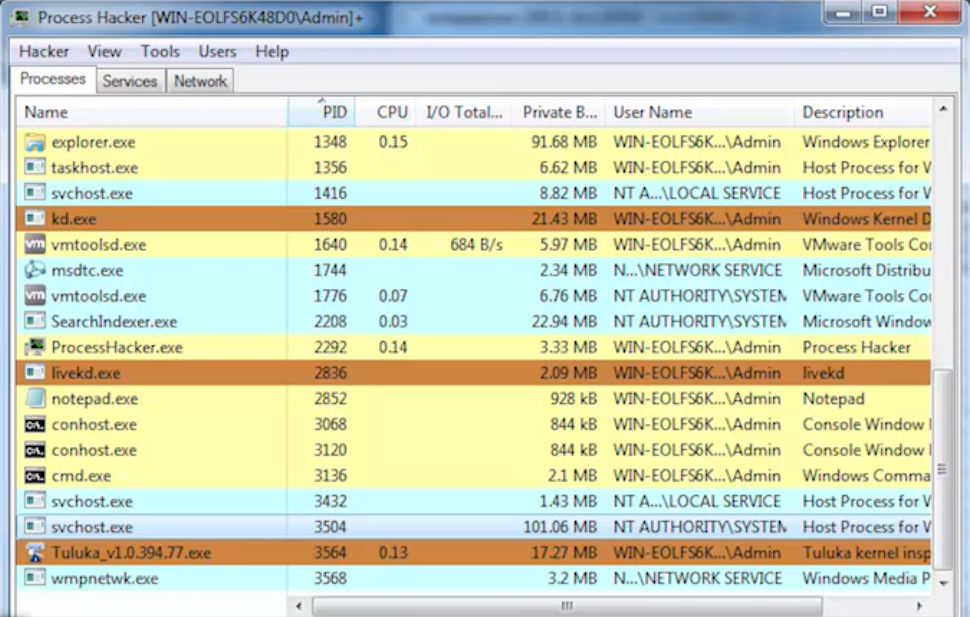

Windows Internals
28 July 2019
To understand the security components of the Windows operating system, it is important to first understand some windows internal concepts – most specifically, the kernel. The kernel is essentially the core of a computer’s operating system. It has complete control of everything in the system; ranging from the start-up process to basic input/output requests. Due to the high authority levels of the kernel, it is a great target for hackers. If they can manipulate the kernel, they can control everything on a user’s system. Primary components that will be discussed in this article include threads, rootkits, and related tools associated with the kernel.
Threads
A thread is known to be the smallest unit of processing inside an OS. Typically, a thread or multiple threads exist within a process. Multiple threads can execute concurrently and share resources such as memory efficiently. However, it is important to note that the CPU switches rapidly between processing threads; which in turn gives the illusion that the threads are running in parallel. All threads have their own stack, since they call their own procedures independently. An example where threads can be visualized is when a user is playing a video while it’s being downloaded at the same time. These multiple threads, or known as multithreading, allows users to perform various tasks on their OS instead of using applications one at a time.
Rootkits
A rootkit is usually a program or a collection of software tools that allows a hacker to gain remote access of another computer. In general, rootkits use stealth as a method to hide within a system, sometimes even for several years. Most antivirus struggle to detect rootkits, since they can block antivirus software and for the fact the activate before the system boots up. Rootkits can be installed in several different ways. The most common include phishing attacks/social engineering, where hackers trick users in downloading the harmful kits.
Since rootkits cannot spread on their own, they user other methods of injection. One common way involves hiding in legitimate software and then spreading from there. There are 4 common types of rootkits:
- User mode – These execute the same way any ordinary program would
- Kernel mode – These add their own code, changing the behavior of the OS
- Bootkits – These infect the master boot record, rendering the boot process useless
- Firmware and hardware – These hide in firmware, ex. in the BIOS or hard drive
Rootkit removal is a very challenging process as rootkits are designed to be hidden very well and highly potent. Most rootkits are removed using special add-ons to antimalware software. Removing rootkits from OS kernels is considered to be the most challenging. Even when removed, in some cases the malware isn’t completely removed or great damage has already been dealt. Either way, prevention is the best cure for rootkits/malware.
Tools
I've used the following tools to analyze a rootkit called “Agony”:
- LiveKd – This tool is similar to WinDbg, which was covered in last week’s article. With a graphical interface, this allows user to view kernel memory from inside the current operating system. It also allows the user to execute debugger commands on crash dump files to get an in-depth view of the internals.
- Tuluka – This tool allows users to detect hidden drivers, devices, and processes. Ultimately it is great for searching through files and identifying rootkits. Additionally, Tuluka offers the user to terminate any process, dump kernel drivers, and display system threads.
- Process Hacker – This tool is used to detect malware, debug software, and monitor system resources. Other features include highlighting of activities for easy navigation, graphs/statistical displays, and real time information on disk access. 